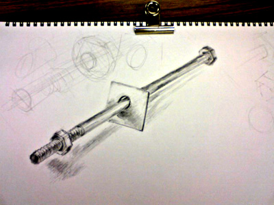
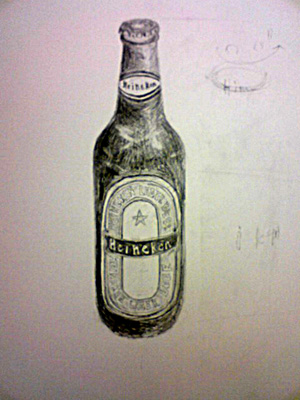
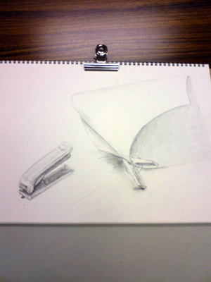
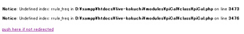
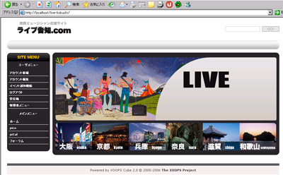
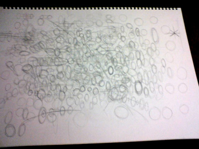

- Permalink
- by
- at 15:03
- in WEBデザインメモ
- Comments (0) (3)
- Trackbacks (0)
デッサン 金属の棒とボルト
2007年09月28日

引越しのため、最後のデッサン習い事です。
約３ヶ月間の短い間だったけど、
本当にデッサン習いに行って良かったと思います。
まだまだ下手糞だけど、
デッサン面白いなーって思うようになったのが
何よりも大きい気がします。
デッサンの奥深さ、楽しさを
何気なく教えてくれた先生に感謝！！
本当にいい先生だったー！
夙川美術研究所
西宮、芦屋、夙川、苦楽園付近に住んでる人で
絵に興味ある人は足を運んでみるといいかも。
- Permalink
- by
- at 15:17
- in デッサン習い事
- Comments (0) (0)
- Trackbacks (0)
illustratorで作品ぽいものを作成
2007年09月27日
- Permalink
- by
- at 23:57
- in WEBデザインメモ
- Comments (0) (0)
- Trackbacks (0)
photoshopで作品ぽく作成
2007年09月26日
「地球 未来」
朝のニュース番組で、オーストラリアの水不足が取り上げられていました。
水不足っていう次元ではなく、何年も雨が降らず湖が干されるぐらいだから
異常気象を通り越して、新しい気候であると専門家は言ってました。
そんな一方、温暖化により北極の氷が溶けて、陸部分がどんどん
水に浸水していってるとか、ほんとどうなるんだ地球って感じですね。。
そんな想いを作品に！！って分けではなく、
photoshopで加工、合成を楽しんでいると、
こんな感じに仕上がりました＾＾；
・作成手順
水部分を切り抜いて「空→ビル→水」と配置し
オーバレイ、乗算で合成しながら、色調補正でバランス整えて、
雷と鳥を配置。
■photoshopで稲妻（雷）を描く
http://hail2u.net/documents/ps_lightning.html
- Permalink
- by
- at 23:43
- in WEBデザインメモ
- Comments (0) (0)
- Trackbacks (0)
ライブ告知.com テストUPしました。
2007年09月25日
以前からXOOPSにて少しずつ進めていた音楽ポータル系サイトをUPしました。
まだ細かいところを調整する必要があるのですが、とりあえずUPして
バグを見つけては修正して見つけては修正…ループ作業したいと思います。
当ブログをご覧の方で、ライブ活動などされている方は
是非是非登録してライブ告知を行ってくださいませ。
相互リンクとかして頂けると物凄く嬉しいです。（リンク登録自動型）
google,yahooにインデックスされるぐらいまでに完成させて
広報活動を行っていきたいと考えています。
■主機能
・ライブ告知
・フォーラム
・リンク登録
・音楽ニュースヘッドライン
・簡単なSNS機能？
ライブ告知.comを宜しくお願いします。
- Permalink
- by
- at 23:46
- in WEBデザインメモ
- Comments (0) (0)
- Trackbacks (0)
さすがはSONY！！
デザインが綺麗だったのでコピって見ました。
ROLLYと書いてあるヘッダ部分背景の
境界線と中身ｸﾞﾗﾃﾞｰｼｮﾝの間に
白線を入れて柔らかさを出しているところとか
ニクイテクニックだなと思いながらコピりました。
シンプルデザインですが、ところどころに
ポイント的なオブジェクト（アイコンとか矢印）を入れて
ボリュームを出しているのとか、さすがだなって思いました。
文字のカーニング処理が苦手というか、
何が正解か分からない＆凄い時間がかかる。。
- Permalink
- by
- at 00:12
- in WEBデザインメモ
- Comments (0) (0)
- Trackbacks (0)
WEBデザイン丸コピ練習 panache
2007年09月24日
JPGサイズ(971×775)
panache
デザイン練習のため、↑のサイトをコピーしてみました。
非常に時間がかかった（汗）
しかし、物凄く勉強になりました。
罫線や、バックカラーの使い方一つで印象がガラリと変わったり、
気づかないところでやたら凝ってることしてたり、
オオーって感心しながらデザインをコピーしました。
photoshopで色を調整してみたんだけど、
個人的には↓ぐらいのカラーが好きだ。
完コピは難しいけど、
100をコピーしたら確実に1は自分のモノになると思います。
それは長年ギターをやってきて身にしみて思う。
ちなみにギターの方は、コピーを甘んじて来たため、
中途半端な技術しか身についておりませんTT
- Permalink
- by
- at 02:25
- in WEBデザインメモ
- Comments (0) (0)
- Trackbacks (0)
イラストレーター トレース さくらんぼ
2007年09月23日
イラストレーターでチェリーをトレース。
トレースマスターって本を片手にですが。。
私はさくらんぼには見えず、リンゴに見えてしまいます。
ｸﾞﾗﾃﾞｰｼｮﾝメッシュを使えば、凄くリアルな感じが出ますね。
でも、こういう系って3D系ソフトで作った方がいいのかなと
思ったり思わなかったりで。
- Permalink
- by
- at 21:38
- in FLASH勉強
- Comments (0) (0)
- Trackbacks (0)
イラストレーター トレース ipod nano
2007年09月22日
illustratorでipod nanoをトレースしました。
トレースマスターっていうイラレの本を片手に
本の通りやっただけですが。。
トレースしたものをFLASHに読み込んで
分解、合体と動きをつけてみました。
ちなみにイラレのトレースで要した時間は２時間。。
もっと細かい物体だと恐ろしい時間がかかるな。。
FLASHで動きをつけるのは、慣れてきたせいか、
スイスイ作業が進みました♪
ちなみに未だipodを持っていません。。
- Permalink
- by
- at 12:47
- in FLASH勉強
- Comments (0) (0)
- Trackbacks (0)
デッサン ビール瓶（Heineken）
2007年09月20日

型、明暗、立体感を
正しく描けるようになることが当分の目標です。
これを描くのに２時間弱かかってるんですが、
30分ぐらいでスラスラ描けるようになりたいです。
5ヵ年計画！！
- Permalink
- by
- at 22:27
- in デッサン習い事
- Comments (0) (0)
- Trackbacks (0)
FLASH サターンリターンって？
2007年09月19日
履歴書を整理してて思ったこと。
一本線が通ってるようで、通ってないようで、
通ってないと思ったら、しっかり通ってるとも考えられたりで。
今まで経験してきたことは、決して無駄ではないが、
直接、今に役立つかというとそうでもない。
先日東京から来てた友達いわく、
僕らの年代（２０代後半～３０代前半）はサターンリターンと
呼ばれる時期であって非常に大事な時期らしい。
サターンリターンは３０年に一度訪れるらしく、
この時期を逃すと６０歳まで訪れないとか。
サターンリターンについて詳しく知らないが、
とにかく大事な時期なことには変わりない。
精一杯やれ！！
ってことと自分なりに解釈しております。
- Permalink
- by
- at 23:37
- in FLASH勉強
- Comments (0) (1)
- Trackbacks (0)
今の状態をFLASHを使って表現。
2007年09月18日
先のことを考えたり、
今のことを考えたり、
過去のことを考えたり、
それでは、今何をしなければいけないのか？
とか考えようとしても何も考えれなかったり、
ただ、無駄に時間が過ぎてしまっていたり、
気がついたら寝てたりと。。。
まさにパンクしてます。。
- Permalink
- by
- at 22:35
- in FLASH勉強
- Comments (0) (0)
- Trackbacks (0)
HEROSを見たが、、、＋神戸散策
2007年09月17日
HEROSをテレビ観戦。
何故だろな。HEROSは何かがしょぼいな。
総合格闘技はやっぱりPRIDEの方が数倍面白かった。
見たかったハリトーノフ、アリスター、ユンドンシクも放送されず、
何のために２時間もテレビの前にいたのか。。
CMもセンスを疑うようなモノが何度も流され、
本気で気持ち悪くなってきて吐き気が。。。
K-1GP開幕戦に期待しよう。
3連休東京から来た友人と神戸散策しておりました。
- Permalink
- by
- at 23:59
- in K-1・格闘技ネタ
- Comments (0) (0)
- Trackbacks (0)
FLASH photoshopから書き出し
2007年09月14日
photoshopで絵を描いて、
ImegeReadyより、swfファイルにてファイル書き出し。
または、pngファイル書き出しにて
透明部分を維持した形でFLASHに読み込み。
をやろうと思ったけど、
透明部分にギザギザが残ってしまう。
↑みたいに。
色々試してみたけど、
どうしても無理だった。
仕方ないので、FLASHの方で、
分解→なげなわツールで不要部分削除。
をやったけど、こんな方法しかないのか。。
あと、jpgファイルを読み込むと
ｸﾞﾗﾃﾞｰｼｮﾝがやたら崩れてる。。
photoshopとFLASHの連携が分からない。。。
■■■追記(解決)■■■
FLASHからPNGデータの透明部分を読み込みで
ギザギザで出る現象だが原因が判明。
原因
【PCのディスプレイ設定が16bitなため】
解決
【PCのディスプレイ設定を32bit(24bit(に変更】
これでギザギザは解決！！
- Permalink
- by
- at 23:02
- in FLASH勉強
- Comments (0) (0)
- Trackbacks (0)
デッサン ホッチキスと洗濯バサミと紙
2007年09月13日

「デッサンは本質を捉えること」
と、モジャ先生がおっしゃってました。
なるほど！
目に見えてるものを描くのではなくて、
構造がどのようになっているか意識して描く。
デッサンって奥が深いんですね。。
ギターでいうと、チョーキングの奥の深さが
少し分かった感じ。
デッサンを習いはじめて4ヶ月ぐらいだけど、
最近は、そこらに転がってる物体がどのような構造に
なっているのか考えることが楽しかったり、
今まで絵を見ることに興味が無かった私が、
興味ありありになってたり、
そんな今日この頃です。
- Permalink
- by
- at 22:31
- in デッサン習い事
- Comments (0) (0)
- Trackbacks (0)
FLASH ボタンに音をつける。
2007年09月12日
マウスオーバーとクリックで音が出ます。
actionscriptは全く使わず、
フラッシュのGUI機能そのまま使いました。
フラッシュより、絵がしょぼすぎて困った。。
そろそろ、がっつりFLASHらしいものに
挑戦してみよかなっと思う今日この頃です。
- Permalink
- by
- at 23:04
- in FLASH勉強
- Comments (0) (0)
- Trackbacks (0)
FLASH テキストボックス値取得
2007年09月11日
テキストボックスＡで取得した文字を
テキストボックスＢに渡すFLASH
onClipEvent(keyUp) {
str = _root.mb.aaa.text;
_root.mb02.test.text = str.toString();
}
シンボルの名前とか、凄い適当だけど・・・
凄い簡単な処理だけど、
ルート→シンボル→テキストボックスという階層のことを
意識してなくて、なかなか受け渡しできず大苦戦した。。
- Permalink
- by
- at 22:53
- in FLASH勉強
- Comments (0) (2)
- Trackbacks (0)
FLASH 背景を移動させて動きをつける。
2007年09月10日
現在の会社を辞めさせて頂き、
兵庫→奈良に帰ることにしました。
しかし、奈良には仕事がないので、
大阪で仕事を探します。
さてとまあ、自ら崖っぷちに飛び込んでしまいました。
でも、これが成長への第一歩だ！！
■FLASH
背景を移動させてモノが動いてるようなのを練習。
やっとこさFLASHというソフトに慣れて
楽しくなってきたかも。
- Permalink
- by
- at 23:10
- in FLASH勉強
- Comments (0) (0)
- Trackbacks (0)
FLASH illustratorから読み込み
2007年09月09日
スーパーバトルサイボーグ「オヤジマン」です。
スケッチブックに何も考えず鉛筆もって
落書きしてたら「オヤジマン」が誕生しました。
そいで、
photoshop→レベル補正
illustratorに配置してペンツールでトレース＋塗り。
illustratorにてswfファイル保存して
FLASHで読み込み。
みたいな流れで作りました。
illustratorにてswfファイル保存して
FLASHで読み込みにて綺麗に
FLASHに配置できるのは知らなかった。
やはり、道はまだまだ長いですね。。
- Permalink
- by
- at 19:32
- in FLASH勉強
- Comments (0) (0)
- Trackbacks (0)
FLASH マスク機能を使って。
2007年09月08日
あっというまに年を取りますね。
その年を重ねた分だけ、成長しているのか？
って不安になる時ってありますよね。。
人間性は置いといて、
仕事に関わる知識、能力って
方向性を間違えると全く無意味なものになってしまいますね。
自分がやりたいことなんて
数年経てば変わるもんだと思うし、
仕方ないのかもしれない。
その場その場で如何に順応するかが大事なのかもしれない。
ﾍ(ﾟ∀ﾟﾍ)ｱﾋｬ
■FLASH
マスク機能を使って数字アニメーション。
2
3
4
5
6
7
と縦に一枚シンボルを移動させました。
- Permalink
- by
- at 23:53
- in FLASH勉強
- Comments (0) (0)
- Trackbacks (0)
FLASH パスに沿って移動とマウスオーバーイベント
2007年09月07日
ハァハァハァ…
これ作るだけで大苦戦です。
FLASHサイトでよくあるマウスオーバーでボタンが
ホワワンと大きくなったりするのを想定して練習。
顔にマウス乗せるとホワワンします。
動けボタン。
パスに沿って移動指定です。
これがなかなか、上手くいかず大苦戦。
原因はしっかり確かめていないが、
パスを書いてからガイドレイヤー指定ではなく、
ガイドレイヤーを作ってからパスを書く。
この順序が重要なのかもしれない。
■追記
パスに沿って移動は、
中心点をガイドレイヤーのパスに合わせる
ことが必要だった。
それで、問題解決。順序は関係ない！
- Permalink
- by
- at 23:09
- in FLASH勉強
- Comments (0) (0)
- Trackbacks (0)
デッサン 瓶 コカコーラ
2007年09月06日

コーラの瓶を描いたけど、
毎度ながら大苦戦。
曲線と「丸」が難しいです。
癖で、丸が右肩上がりになっているらしい。
で、バランスがどんどん崩れていくみたいな。
絵上手くなりたいな。。。
イラレで３Ｄ回転体使って、瓶を描いてみたけど、
ボーリングのピンだな、これは つωT`)
- Permalink
- by
- at 23:48
- in デッサン習い事
- Comments (0) (0)
- Trackbacks (0)
猪木ボンバイエ 元気ですかFLASH
2007年09月05日
元気ですかー！？
「お元気ですか？元気じゃないから聞いている。それだけ～」
ってエゴラッピンの「レモン」っていう曲にあって
むしょうにこの曲が聞きたくなってＣＤを漁ってみたが、
なくなってた・・・ＴＴ
超強烈にオレ的名盤な曲だから
新しいＣＤ買ってくるか。。。
んなこんだで、ＦＬＡＳＨの勉強してたら
猪木さんになってしまった。
■FLASH
start時にstop();かけてボタンにて開始。
これ以上のごちゃごちゃした操作は
本を読んで勉強しないと無理そうだ。。。

トイズファクトリー (2006/05/17)
売り上げランキング: 1811

 実は
実は やっぱり本家！ これは、ヤバイかもしれない!!
やっぱり本家！ これは、ヤバイかもしれない!!- Permalink
- by
- at 23:04
- in FLASH勉強
- Comments (0) (0)
- Trackbacks (0)
ハリトーノフ HEROS参戦！！
2007年09月04日
ついにハリトーノフが見れる！
PRIDEの強豪は、ほとんどUFCに行ってしまったため
テレビで見れなくて(´･ω･`)/~~だったから
ハリトーノフのHEROS参戦は嬉しいです。
ただ、HEROSにはヘビー級選手がいない。。
なんか秋山が復活みたいな話になってるし、
ここは、「ハリトーノフvs秋山」だな！
■FLASH
actionscript[stop();]と[gotoAndPlay(1);]だけ使った。
FLASHのボタンイベントがいまいち分かっていない。。
- Permalink
- by
- at 22:15
- in FLASH勉強
- Comments (0) (0)
- Trackbacks (0)
FLASH 苦手です。
2007年09月03日
たまにはFLASHに慣れるため
重い腰をあげる。
FLASHのシンボル化の使い方が
意味がイマイチわからなかったんで、
シンボル化→ムービークリップを使用して作成。
オブジェクトをどんどん複製したり、
複製したオブジェクトを更にシンボル化して
他の動作させたり出来るぽい。
ふむふむ。なるほど！って感じです。
てか、キモチワルイ。
酔いますね。。
ごめんなさい。
- Permalink
- by
- at 20:54
- in FLASH勉強
- Comments (0) (4)
- Trackbacks (0)
piCalの予定表編集画面 ”繰り返し”の項目を削除
2007年09月02日
--自分用メモです--
piCal.htmlの2180行あたりの
***********************************************************
<tr>
<td class='head'>"._PICAL_TH_RRULE."</td>
<td class='even'>" . $this->rrule_to_form( $rrule , $end_ymd ) . "</td>
</tr>
***********************************************************
を削除
また、予定表の詳細情報については、同じファイルの1860行あたりの
***********************************************************
<tr>
<td class='head'>"._PICAL_TH_RRULE."</td>
<td class='even'>$rrule</td>
</tr>
***********************************************************
を削除
すると登録時に
【Notice Undefined index: rrule_freq in …】

なエラーが一瞬表示される。
こちら、回避法
piCal.htmlの3469行あたりの
***********************************************************
// POSTされたrrule関連の設定値を、RRULE文字列に組み上げるクラス関数
function rrule_from_post( $start , $allday_flag )
{
// 繰り返し無しなら、無条件で空文字列を返す
if( $_POST['rrule_freq'] == 'none' ) return '' ;
***********************************************************
「if( $_POST['rrule_freq'] == 'none' ) return '' ;」
の部分でエラーが出てるので、
その前でreturn;してやる。
***********************************************************
// POSTされたrrule関連の設定値を、RRULE文字列に組み上げるクラス関数
function rrule_from_post( $start , $allday_flag )
{
return '' ;
// 繰り返し無しなら、無条件で空文字列を返す
if( $_POST['rrule_freq'] == 'none' ) return '' ;
***********************************************************
んな感じ。
「// 繰り返し無しなら、無条件で空文字列を返す」
繰り返しを削除したんで、「繰り返し無し」と同じことになるため、
returnで空を返すことで上手く動くと思う。
エラーは出なくなったが、システム奥深くまでは
検証してられんのでとりあえずな回避法。
- Permalink
- by
- at 22:48
- in PHP/システム関連
- Comments (0) (0)
- Trackbacks (0)
XOOPSでポータルサイトを作るぞ！！
って、簡単なものじゃなかった。。。
XOOPS諦めて、自分でプログラム書いて構築しようと思ったけど、
恐ろしい作業量になってしまい断念。
ってことでXOOPSに逆戻りしてきました。
やるならガンガンいじってやると思い、
自宅ＰＣに環境構築！！
XAMPP日本語版
環境構築というと非常に難しくダルそうに思えるけど、
XAMPPというスーパー便利なフリーソフトがあるんで、
１分で環境構築完了します。
XAMPPとは、
・Apache
・MySQL
その他色々が入ったパッケージソフト。
一度、別々でApacheとかMySQLとかインストールしたことがあるんだけど、
設定は非常にややこしく、XAMPPを知った時は感動しました。
とまあ、今回XAMPP使ってXOOPS開発環境が数分で整いました。

デザイン部分をカスタマイズ。
カスタマイズが非常にややこしい。。
- Permalink
- by
- at 21:15
- in PHP/システム関連
- Comments (0) (0)
- Trackbacks (0)
ストローク？鉛筆で線を書くことになれる。
2007年09月01日

ひたすら、丸を描く。
そして丸を描く。
何も考えず丸を描く。
何か考えて丸を描く。
絵は最近始めたばかりで、よく分からないんですが、
こういう練習ってあるんでしょうかね。
ギターでいえば、ひたすらチョーキングの練習するとか
そういう感じなんでしょうか。。
チョーキングは、基本ながらも、突き詰めると凄く難しいので、
絵に関しても、こういうの大事なんでしょうね！
しかし、丸って難しい！
- Permalink
- by
- at 22:30
- in デッサン習い事
- Comments (0) (3)
- Trackbacks (0)


{kind=link}
{kind=link}
{kind=link}
{kind=link}
{kind=link}
{kind=link}